Уникальное сочетание лучших блюд корейской кухни: бибимбап, бульгоги, кимчи и традиционные панчханы. Идеально для первого знакомства с корейской кухней.
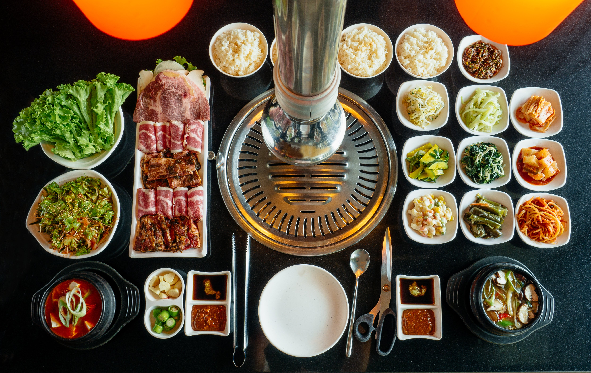
Закуски и салаты
Кимчи
450 ₽
Острое
Традиционная корейская квашеная капуста с острым соусом из кочхуджана, чеснока и имбиря.
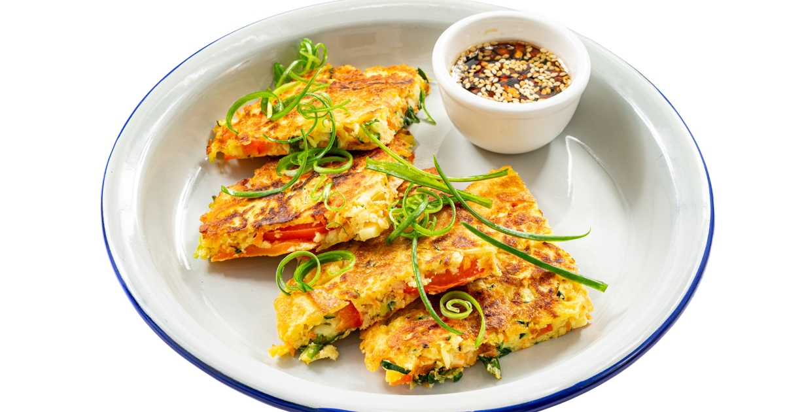
Пхаджон
590 ₽
Вегетарианское
Корейский зеленый луковый блин с морепродуктами, подается с соевым соусом.
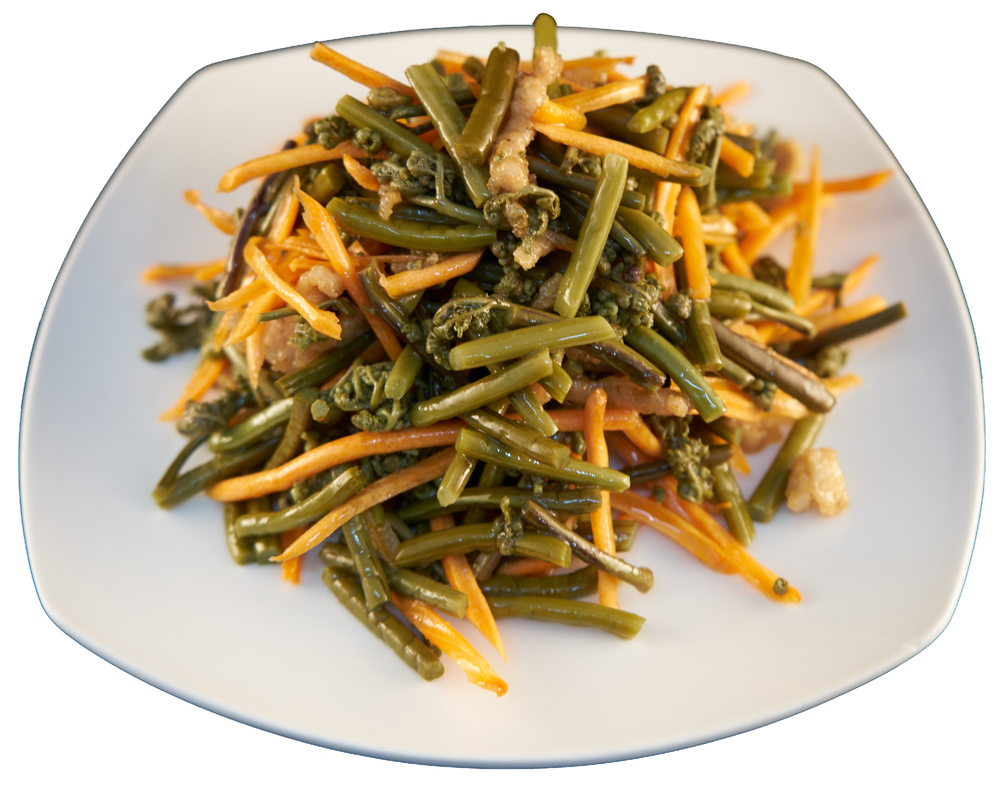
Намуль
480 ₽
Вегетарианское
Ассорти из корейских салатов: шпинат, ростки сои, папоротник с кунжутным маслом.
Основные блюда
Бибимбап
850 ₽
Рис с овощами, мясом и яйцом, подается с кочхуджан. Перемешивается перед употреблением.
Бульгоги
950 ₽
Выбор шефа
Маринованная говядина на гриле с овощами, подается с рисом и листьями салата.
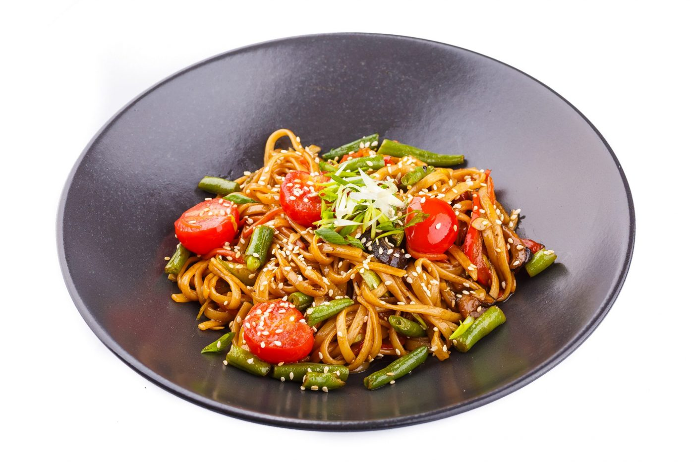
Чопчхе
780 ₽
Вегетарианское
Лапша из батата с овощами, обжаренная в кунжутном масле с соевым соусом.
Супы
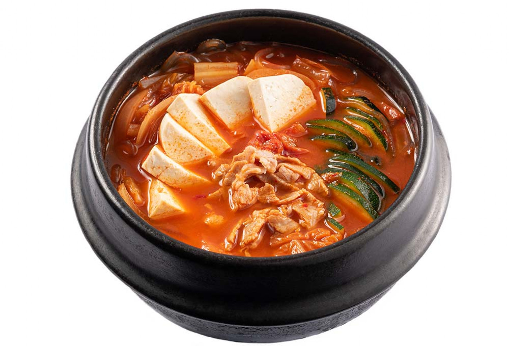
Сундубу-ччиге
850 ₽
Острое
Корейский острый суп с мягким тофу и морепродуктами.
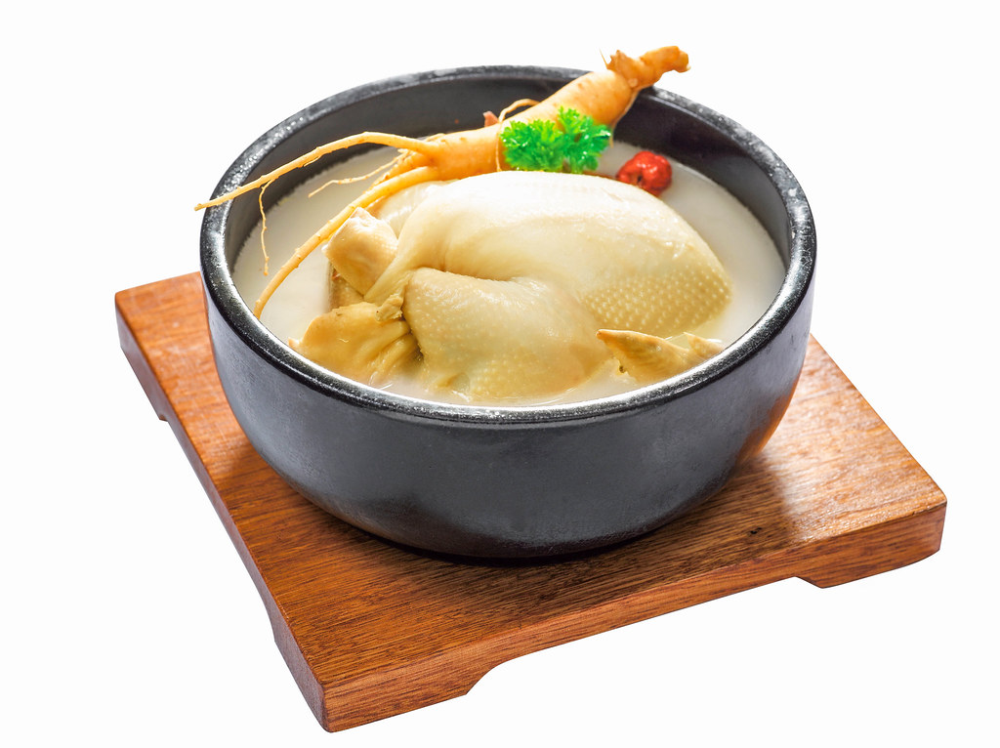
Самгетан
950 ₽
Наваристый корейский суп с целой молодой курицей, фаршированной рисом, женьшенем, чесноком и финиками.
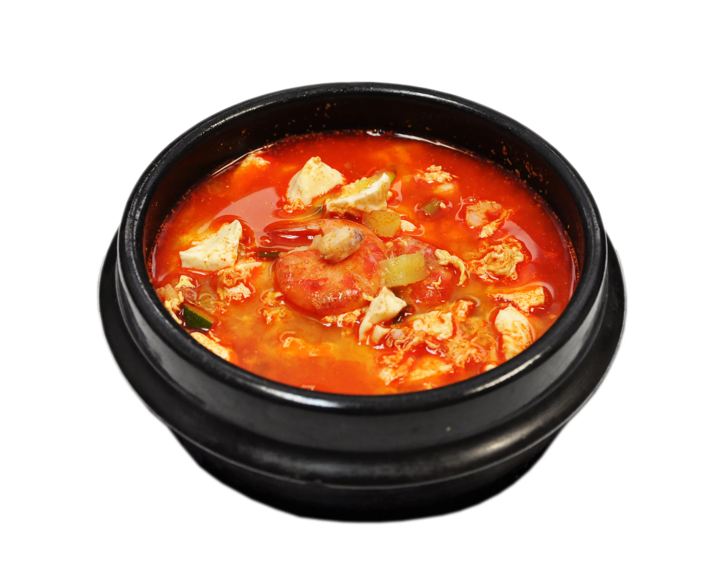
Кимчи-ччиге
750 ₽
Острое
Корейский рагу из ферментированной кимчи, свинины, тофу и овощей, с густым насыщенным бульоном.
Напитки
Соджу
900 ₽
Кристально-чистый корейский аналог водки (20% крепости) с мягким, слегка сладковатым вкусом.
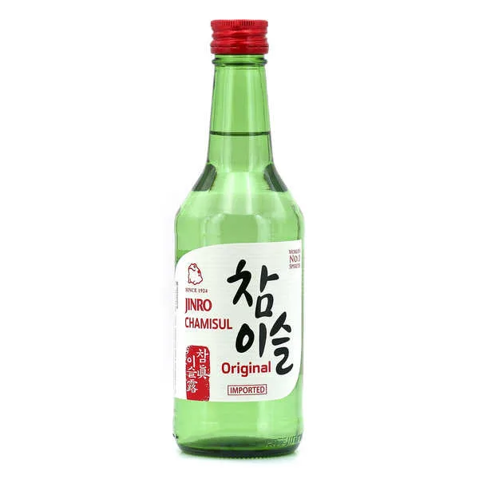
Макколи
650 ₽
Корейский рисовый ликёр (6–8% крепости) с лёгкой игристостью и кисло-сладким йогуртовым послевкусием.
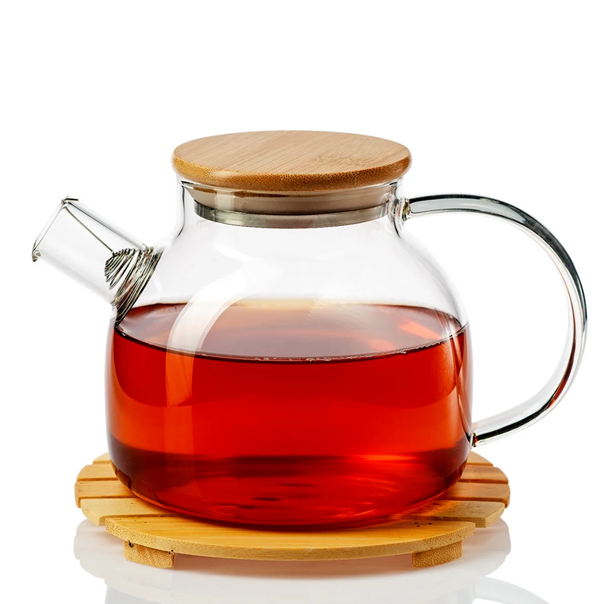
Чай омиджа
400 ₽
Традиционный корейский чай из ферментированных ягод лимонника, с ярким рубиновым цветом и уникальным вкусом
Десерты
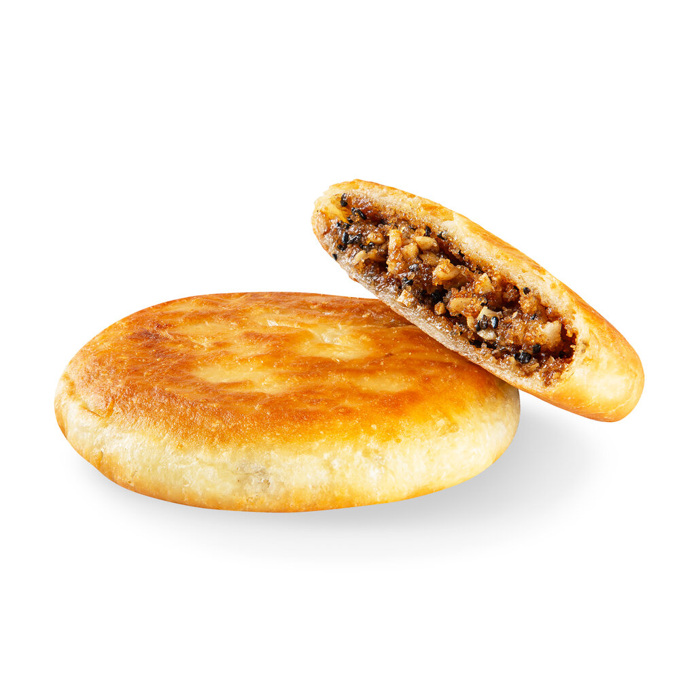
Хотток
200 ₽
Жареные корейские лепёшки с хрустящей корочкой и сладкой начинкой.
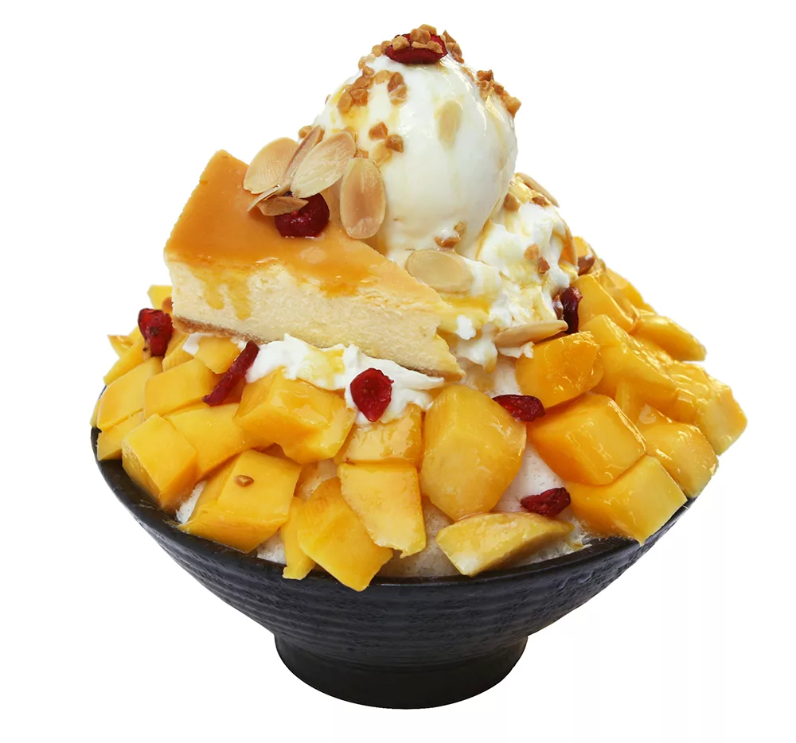
Бинсу
500 ₽
Выбор шефа
Корейский десерт с колотым льдом, увенчанный сладкой красной фасолью, рисовыми лепешками, фруктами и сгущенкой.
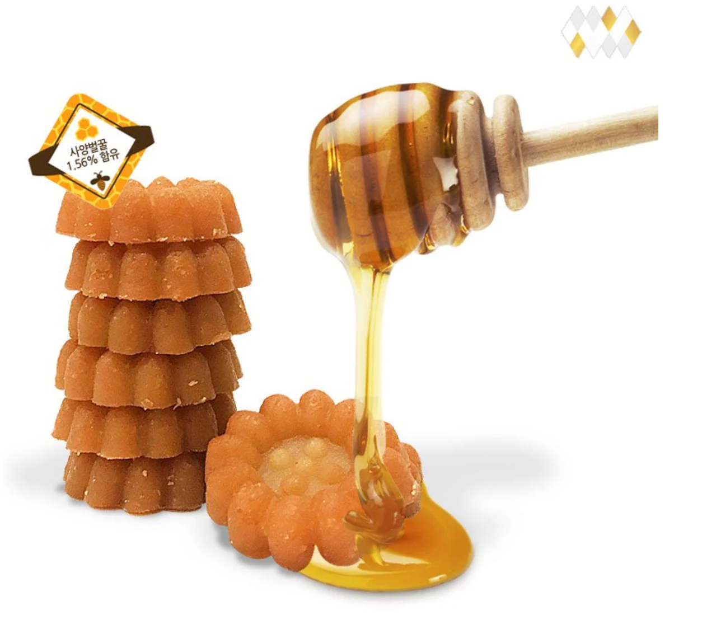
Якква
400 ₽
Традиционные корейские медовые пряники, хрустящие снаружи и мягкие внутри, с ароматом имбиря, корицы и кунжутного масла.